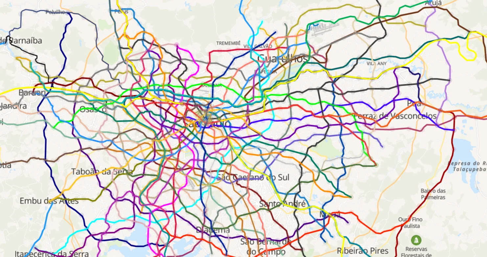

Trens por situação
Alertas ativos por gravidade
Sensores com leitura crítica
Viagens em andamento
Velocidade média da frota
Sensores em nível crítico
Viagens em andamento
Velocidade média por trem (24 h)
Mapa das rotas

Trens por situação
Alertas ativos por gravidade
Sensores com leitura crítica
Viagens em andamento
Velocidade média da frota
